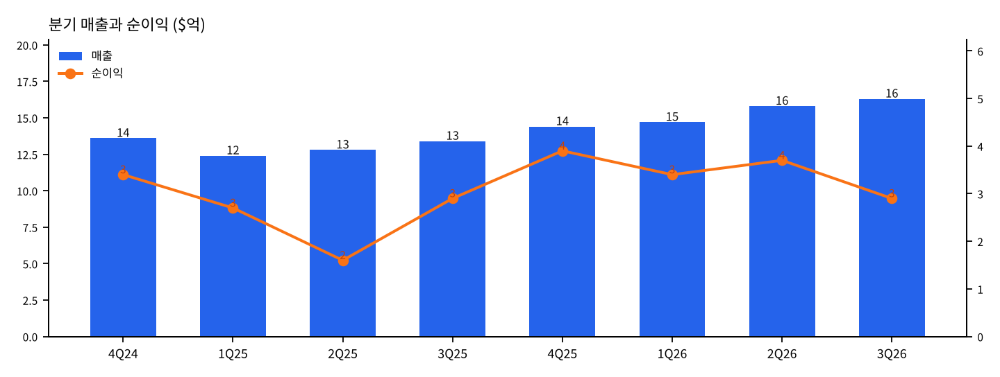
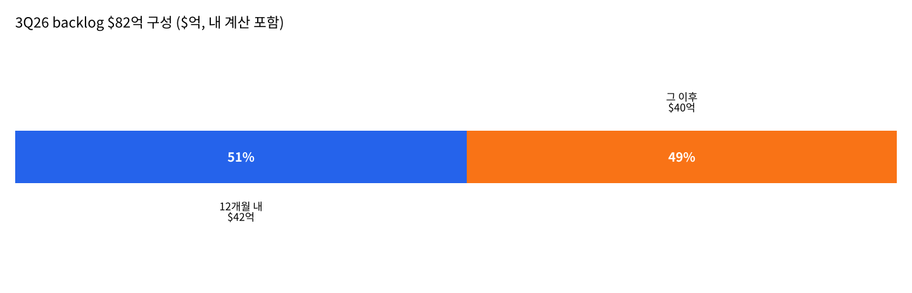
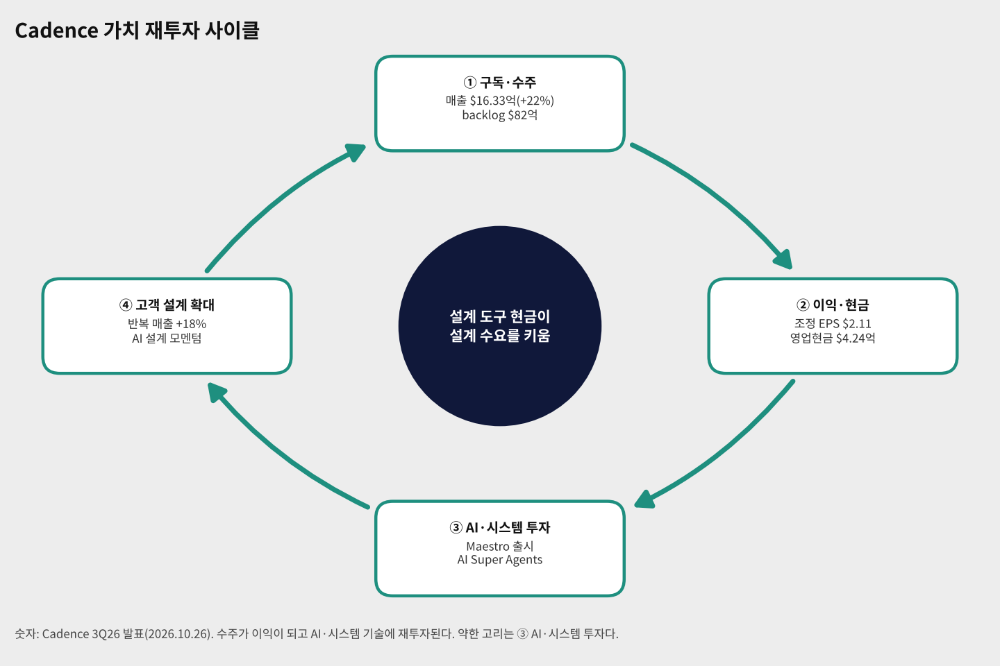

Cadence는 칩 설계 도구를 구독으로 팔고, 하드웨어 에뮬레이터로 설계를 검증하게 한다. 칩이 복잡해질수록 도구 사용량이 늘어난다.
| 항목 | 내용 |
|---|---|
| 종목 | Cadence Design Systems (CDNS) · NASDAQ · 소프트웨어(EDA) · 캘리포니아 새너제이 |
| 최근 분기(3Q26) | 매출 $16.33억, 조정 EPS $2.11 |
| 핵심 상품 | 칩 설계 소프트웨어, 하드웨어 에뮬레이터, 시스템 분석, AI |
| 직원 수 | 약 13,800명(트레이딩뷰) |
| 멀티플 | PER·PEG·P/S는 08~10 항목 표 참조 |
| 직책 | 인물 | 역할·특징 |
|---|---|---|
| 회장·CEO | 아니루드 데반(Anirudh Devgan) | AI 칩 설계 수요와 Maestro·AI Super Agents를 설명 |
| CFO | 존 월(John Wall) | 분기 CFO 코멘트로 가이던스 상향을 설명 |
경영 스타일: 장기 계약 + 반복 매출. backlog를 쌓아 매출 예측 가능성을 높이는 방식이다.
Maestro 등 AI 모델로 설계 시간을 줄이고 품질을 높이려 한다.
칩에서 시스템·패키지·데이터센터 설계로 영역을 넓힌다.
다음 실적발표는 세 가지 질문에 답하는 자리다.
1. backlog가 매출로 이어지나?
2. 하드웨어 재고 증가가 현금을 계속 누르나?
3. AI 설계 수요가 이어지나?
한 줄 판정 규칙: 첫 질문(backlog 전환)이 이어지면 약한 고리인 ③ 현금 전환 문제만 남는다고 본다.
일정: 4Q26 실적 발표는 2027.02.23 예정(트레이딩뷰). FY27 가이던스가 함께 나온다.
| 분기 | 매출 | 순이익 | EPS | 조정 EPS | 특이 사항 |
|---|---|---|---|---|---|
| 4Q24 | $13.6억 | $3.4억 | 1.24 | 1.88 | |
| 1Q25 | $12.4억 | $2.7억 | 1.00 | 1.57 | |
| 2Q25 | $12.8억 | $1.6억 | 0.59 | 1.65 | |
| 3Q25 | $13.4억 | $2.9억 | 1.05 | 1.93 | |
| 4Q25 | $14.4억 | $3.9억 | 1.42 | 1.99 | |
| 1Q26 | $14.7억 | $3.4억 | 1.23 | 1.96 | |
| 2Q26 | $15.8억 | $3.7억 | 1.33 | 2.11 | |
| 3Q26 | $16.3억 | $2.9억 | 1.05 | 2.11 | AI 칩 설계 수요, backlog $82억 신기록 |
매출은 트레이딩뷰 스캐너의 분기 총매출이라 회사가 발표한 순매출과 다를 수 있다. 매출·순이익·EPS(GAAP 희석)는 트레이딩뷰 스캐너, 조정 EPS는 트레이딩뷰 실적 페이지의 Reported 값이다. 분기 정렬은 오래된 분기→최신이다.

흐름 요약: 최근 분기 매출은 $16.3억로 전년 동기 $13.4억 대비 +21.6%, 순이익은 $2.9억(전년 $2.9억)다. 최근 4분기 GAAP EPS는 $5.03, 조정 EPS는 $8.17다.
| 항목 | 내용 | 3Q26 금액 | 비고 |
|---|---|---|---|
| 12개월 내 전환 예정 | backlog 중 곧 매출이 될 부분 | $42억 | 회사 발표 |
| 그 이후(내 계산) | 12개월 뒤 매출 | $40억 | backlog $82억에서 뺀 값 |

backlog의 절반 가까이가 1년 안에 매출이 된다.
Cadence는 전자 시스템 설계를 가능하게 하는 소프트웨어와 하드웨어를 제공하는 것을 목표로 한다.
| 축 | 내용 |
|---|---|
| 제품 | EDA, 에뮬레이터, 시스템 분석 |
| 고객 | 반도체·시스템 기업 |
| AI | Maestro, AI Super Agents |

| 이동평균 | 값 | 종가 대비 | 위치 |
|---|---|---|---|
| 5일선 | $310.31 | -1.3% | 종가 아래 |
| 20일선 | $324.56 | -5.6% | 종가 아래 |
| 50일선 | $322.47 | -5.0% | 종가 아래 |
| 100일선 | $329.34 | -7.0% | 종가 아래 |
| 200일선 | $328.60 | -6.8% | 종가 아래 |
52주 고가 $416.69(2026-06-02)·저가 $262.75(2026-02-03) 범위에서 종가 $306.30는 모든 이동평균선 아래이고.
| 규칙 | 기준 | 현재 값 | 신호 |
|---|---|---|---|
| 장기 추세 필터 | 종가 vs 200일선 | $306.30 < $328.60 | 매도 |
| 중장기 교차 | 50일선 vs 200일선 | $322.47 < $328.60 | 매도 |
| 단기 교차 | 20일선 vs 50일선 | $324.56 > $322.47 | 매수 |
| 돈키언 채널 | 55일 고가 $361.91 / 저가 $273.07 | 중간값 $317.49 아래 | 매도 |
| 1개월 모멘텀 | 21거래일 수익률 | -6.1% (기준 $326.07) | 매도 |
| 3개월 모멘텀 | 63거래일 수익률 | -4.0% (기준 $319.02) | 매도 |
| 6개월 모멘텀 | 126거래일 수익률 | -14.6% (기준 $358.46) | 매도 |
| 12개월 모멘텀 | 252거래일 수익률 | +1.0% (기준 $303.21) | 매수 |
| 종합 (8개 평균) | -0.50 | 매도 |
해석: 매수 신호 2개(단기 교차, 12개월 모멘텀), 매도 신호 6개(장기 추세 필터, 중장기 교차, 돈키언 채널, 1개월 모멘텀, 3개월 모멘텀, 6개월 모멘텀). CTA 점수 -0.50(매도). 14일 ATR $13.75 (4.5%), 52주 고가 $416.69 · 저가 $262.75.
| 가격 | 기준 | 무엇이 바뀌나 |
|---|---|---|
| $361.91 | 55일 고가 | 돌파 시 채널 상단 갱신 |
| $358.46 | 6개월 모멘텀 기준가 | 종가가 이 가격 위면 6개월 신호 매수 |
| $328.60 | 200일선 | 종가가 이 선 위/아래인지로 장기 추세 신호가 바뀜 |
| $326.07 | 1개월 모멘텀 기준가 | 종가가 이 가격 위면 1개월 신호 매수 |
| $319.02 | 3개월 모멘텀 기준가 | 종가가 이 가격 위면 3개월 신호 매수 |
| $317.49 | 돈키언 중간값 | 55일 채널 중간값 위/아래로 신호가 바뀜 |
| $303.21 | 12개월 모멘텀 기준가 | 종가가 이 가격 위면 12개월 신호 매수 |
| $273.07 | 55일 저가 | 이탈 시 채널 하단 갱신 |
가격 수준은 신호가 바뀌는 기준선일 뿐 진입·청산 가격 제안이 아니다. 20일/50일 교차는 이동평균 자체가 움직여 단일 가격으로 표시하지 않았다. 일봉·주봉은 종가 기준 직접 계산(고저 데이터 미사용)이다.
| 악재 요인 | 내용 | 강도 |
|---|---|---|
| 반도체 의존 | AI 칩 설계 수요에 크게 의존 | 중간 |
| 현금 전환 | 영업현금 $4.24억, 재고 증가 | 중간 |
| 마진 | 비GAAP 영업이익률이 좁은 폭 beat에 그침 | 참고 |
| 티커 | 회사 | PER(TTM) | PEG | P/S | EPS 성장(YoY) |
|---|---|---|---|---|---|
| CDNS | Cadence Design Systems | 37.5배 | 2.31 | 13.76배 | +16% |
| SNPS | Synopsys | 77.2배 | – | 8.87배 | -56% |
| ADBE | Adobe | 12.4배 | 1.08 | 3.44배 | +12% |
| INTU | Intuit | 18.8배 | 0.93 | 3.97배 | +20% |
| NOW | ServiceNow | 64.0배 | – | 6.12배 | -16% |
비교 결론: Cadence의 PER 37.5배는 Adobe·Intuit보다 높고 Synopsys(77.2배)·ServiceNow(64.0배)보다 낮다. PEG 2.31는 Adobe(1.08)·Intuit(0.93)보다 높다.
현금·부채는 트레이딩뷰 스캐너 값이다. 현금이 부채를 웃돈다.
| 지표 | 값 | 출처 | 해석 |
|---|---|---|---|
| 현금·단기투자 | $15억 | 트레이딩뷰 스캐너(최근 분기) | |
| 총부채 | $28억 | 트레이딩뷰 스캐너(최근 분기) | |
| 순부채(부채−현금) | $13억 | 내 계산 | 현금 대비 부채 부담 |
| 잉여현금흐름(TTM) | $18억 | 트레이딩뷰 스캐너 | |
| TTM 매출 | $61억 | 트레이딩뷰 스캐너 |
| 기준 | 매출 | P/S | 비고 |
|---|---|---|---|
| 내 계산(종가 ÷ 최근 4분기 매출 합계) | $61.2억 | 13.76배 | 시총은 정렬용 데이터에서만 사용 |
| 동종(트레이딩뷰) | – | SNPS 8.87배 · ADBE 3.44배 · INTU 3.97배 · NOW 6.12배 | 11.19 |
해석: 현금 약 $14.5억과 자사주 매입 여력이 있다(회사 발표 현금 $14.5억). 현금흐름은 하드웨어 재고 때문에 분기 변동이 크다(내 해석).
EBITDA는 영업활동의 현금 창출력을 보는 지표이고, PEG는 PER을 EPS 성장률로 나눈 값이다. EBITDA·FCF는 트레이딩뷰 TTM 값이다.
| 지표 | 값 | 산출 |
|---|---|---|
| EBITDA(TTM) | $22억 | 트레이딩뷰 스캐너 |
| EBITDA 마진 | 36.1% | EBITDA ÷ TTM 매출(내 계산) |
| FCF 마진 | 29.5% | FCF ÷ TTM 매출(내 계산) |
| PER(GAAP TTM) | 60.9배 | $306.30 ÷ $5.03 |
| PER(조정 TTM) | 37.5배 | $306.30 ÷ $8.17 |
| 방식 | PER | EPS 성장률 | PEG | 판정 |
|---|---|---|---|---|
| 조정 EPS (TTM $8.17) | 37.5배 | +16% ($7.03 → $8.17) | 2.31 | 기준 초과 |
| GAAP EPS (TTM $5.03) | 60.9배 | +30% ($3.88 → $5.03) | 2.05 | 기준 초과 |
판정: 조정 EPS 기준 PEG 2.31 → 1.0 초과 PEG 기준은 1.0 이하 투자 적격, 0.5 이하 적극 매수다. EPS 성장률은 최근 4분기 EPS 합계를 직전 4분기 합계와 비교한 값(내 계산)이고, 일회성 항목이 있으면 조정 EPS 행을 함께 본다.

Cadence의 사이클: 설계 도구 이익이 AI·시스템 기술에 재투자돼 고객 설계를 늘리고, 늘어난 설계가 다시 수주와 매출이 되는 순환이다.
| 고리 | 현재 숫자·근거 |
|---|---|
| ① 구독·수주 | 3Q26 매출 $16.33억(+22%) · backlog $82억 |
| ② 이익·현금 | 조정 EPS $2.11 · 영업현금 $4.24억 · FCF $3.62억 |
| ③ AI·시스템 투자 | Maestro 출시 · 투자 금액은 보고서에 없음(내 해석) |
| ④ 고객 설계 확대 | 반복 매출 +18% · AI 설계 수요 |
사이클의 특징: 약한 고리는 ③ AI·시스템 투자다(투자 금액이 보고서에 없다). "(내 해석)"은 보고서 수치가 아닌 해석이다.